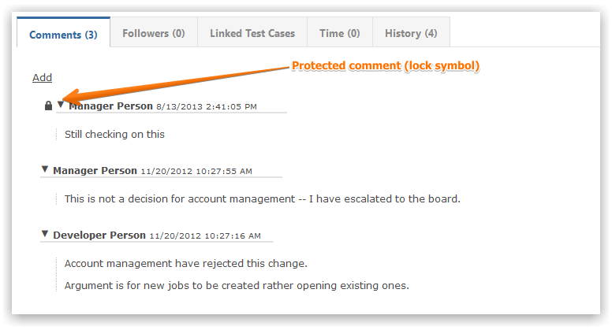

Every comment can be assigned restricted visibility to control who can see it.

To use this feature of Gemini, Visibility should be enabled on the Project Template under Creating, Editing, and Viewing
You can use User Group restrictions on Screens to control which users can set visibility on comments (and work items)
Comment visibility is set at creation time, but can be modified subsequently.
Tip If you do not see the Visibility field, it is because Visibility is not enabled on the Project Template